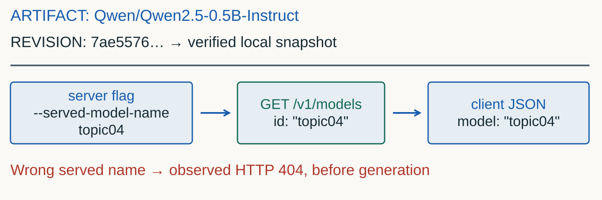
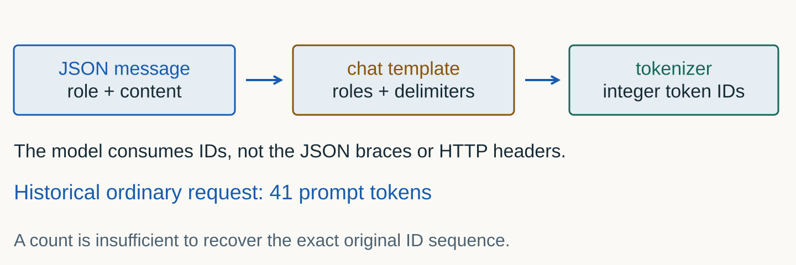
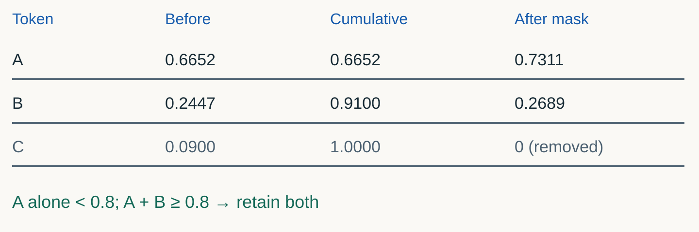
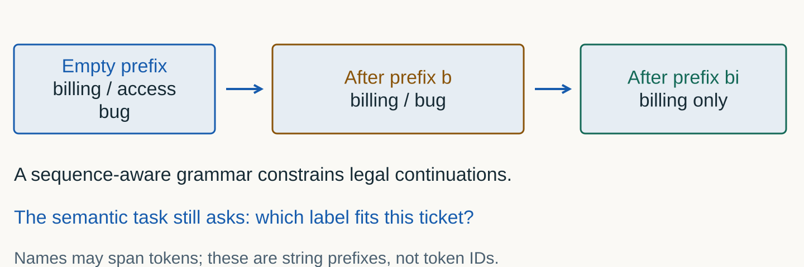
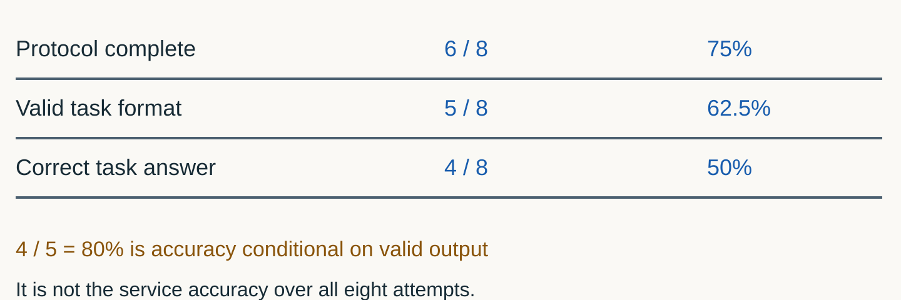
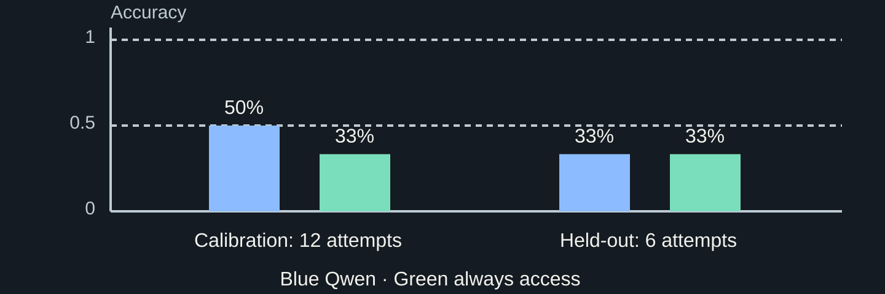
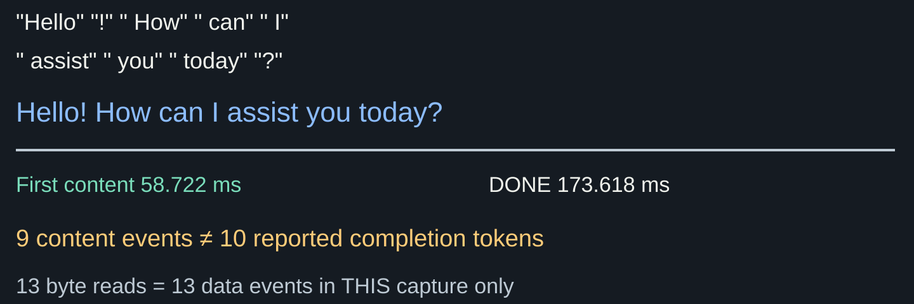
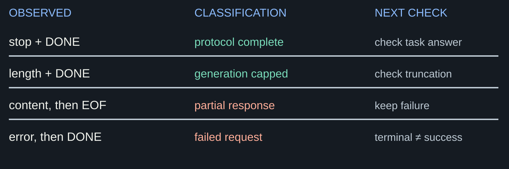
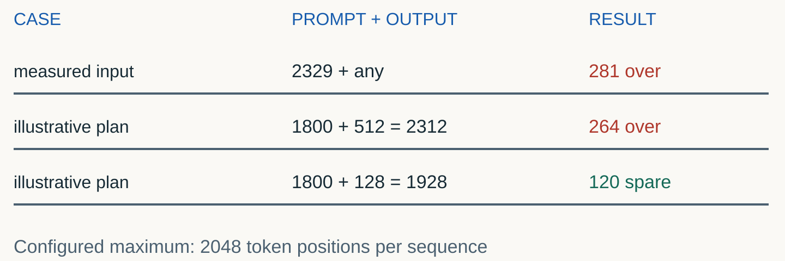

One kitchen; two sides of the hatch.Одна кухня; две стороны раздачи.

The client sees an HTTP contract. Behind it, tokenization, scheduling, model workers and GPU kernels form the service.
Клиент видит HTTP-контракт. За ним токенизация, шедулинг, воркеры модели и GPU-ядра образуют сервис.









![Twelve handwritten ticket cases: all twelve valid, six correct. Rows are gold billing/access/bug; columns are predicted billing/access/bug/invalid. Counts are [[0,3,1,0],[0,4,0,0],[0,2,2,0]]. This is historical Transformers evidence, not fresh vLLM quality.](assets/figures/t4-ml-confusion-light.svg)
![Twelve handwritten ticket cases: all twelve valid, six correct. Rows are gold billing/access/bug; columns are predicted billing/access/bug/invalid. Counts are [[0,3,1,0],[0,4,0,0],[0,2,2,0]]. This is historical Transformers evidence, not fresh vLLM quality.](assets/figures/t4-ml-confusion-dark.svg)








